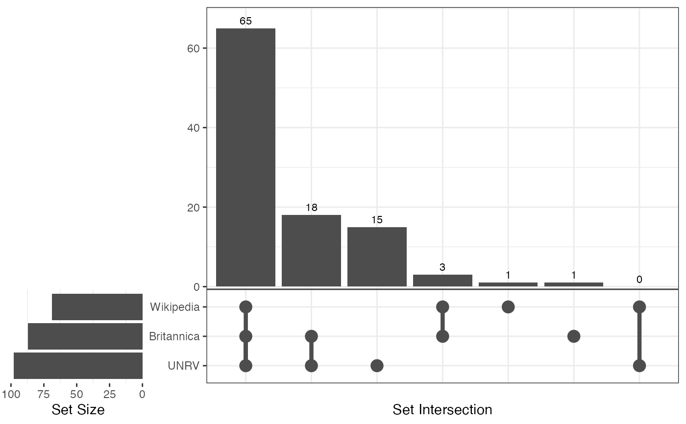

Compare the overlap between datasets in 'many' datacubes
Source:R/compare_dimensions.R
compare_overlap.RdCompare the overlap between datasets in 'many' datacubes
Value
compare_overlap() returns a tibble with information about each dataset
and the number of overlapping observations.
Details
compare_overlap() compares the overlap between "key" observations
in each dataset in a 'many' datacube.
See also
Other compare_:
compare_categories(),
compare_dimensions(),
compare_missing()
Examples
# \donttest{
compare_overlap(emperors, key = "ID")
#> $Wikipedia
#> [1] "Augustus" "Tiberius" "Caligula"
#> [4] "Claudius" "Nero" "Galba"
#> [7] "Otho" "Vitellius" "Vespasian"
#> [10] "Titus" "Domitian" "Nerva"
#> [13] "Trajan" "Hadrian" "Antoninus Pius"
#> [16] "Lucius Verus" "Marcus Aurelius" "Commodus"
#> [19] "Pertinax" "Didius Julianus" "Septimus Severus"
#> [22] "Caracalla" "Geta" "Macrinus"
#> [25] "Elagabalus" "Severus Alexander" "Maximinus I"
#> [28] "Gordian I" "Gordian II" "Balbinus"
#> [31] "Pupienus" "Gordian III" "Philip I"
#> [34] "Decius" "Hostilian" "Trebonianus Gallus"
#> [37] "Aemilian" "Valerian" "Gallienus"
#> [40] "Claudius Gothicus" "Quintillus" "Aurelian"
#> [43] "Tacitus" "Florian" "Probus"
#> [46] "Carus" "Numerian" "Carinus"
#> [49] "Diocletian" "Maximian" "Constantius I"
#> [52] "Severus II" "Galerius" "Constantine I"
#> [55] "Maxentius" "Lucinius I" "Maximinus II"
#> [58] "Constantine II" "Constantius II" "Constans I"
#> [61] "Vetranio" "Julian" "Jovian"
#> [64] "Valentinian I" "Valens" "Gratian"
#> [67] "Valentinian II" "Theodosius I" "Constantius III"
#>
#> $UNRV
#> [1] "Augustus" "Tiberius" "Caligula"
#> [4] "Claudius" "Nero" "Galba"
#> [7] "Otho" "Vitellius" "Vespasian"
#> [10] "Titus" "Domitian" "Nerva"
#> [13] "Trajan" "Hadrian" "Antoninus Pius"
#> [16] "Lucius Verus" "Marcus Aurelius" "Commodus"
#> [19] "Didius Julianus" "Pertinax" "Pescennius Niger"
#> [22] "Septimus Severus" "Clodius Albinus" "Geta"
#> [25] "Caracalla" "Macrinus" "Elagabalus"
#> [28] "Severus Alexander" "Maximinus I" "Balbinus"
#> [31] "Gordian I" "Gordian II" "Pupienus"
#> [34] "Gordian III" "Philip I" "Decius"
#> [37] "Trebonianus Gallus" "Aemilian" "Valerian"
#> [40] "Gallienus" "Postumus" "Claudius Gothicus"
#> [43] "Laelianus" "Marius" "Victorinus"
#> [46] "Quintillus" "Aurelian" "Tetricus"
#> [49] "Tacitus" "Florian" "Probus"
#> [52] "Carus" "Numerian" "Carinus"
#> [55] "Diocletian" "Carausius" "Maximian"
#> [58] "Allectus" "Constantius I" "Galerius"
#> [61] "Severus II" "Maxentius" "Constantine I"
#> [64] "Lucinius I" "Constantine II" "Constans I"
#> [67] "Constantius II" "Magnentius" "Julian"
#> [70] "Jovian" "Valentinian I" "Valens"
#> [73] "Procopius" "Gratian" "Valentinian II"
#> [76] "Theodosius I" "Magnus Maximus" "Eugenius"
#> [79] "Arcadius" "Honorius" "Theodosius II"
#> [82] "Johannes" "Valentinian III" "Marcian"
#> [85] "Petronius Maximus" "Avitus" "Majorian"
#> [88] "Leo I" "Libius Severus" "Anthemius"
#> [91] "Olybrius" "Glycerius" "Leo II"
#> [94] "Julius Nepos" "Zeno" "Basiliscus"
#> [97] "Romulus Augustulus" "Anastasius"
#>
#> $Britannica
#> [1] "Augustus" "Tiberius" "Caligula"
#> [4] "Claudius" "Nero" "Galba"
#> [7] "Vespasian" "Otho" "Vitellius"
#> [10] "Titus" "Domitian" "Nerva"
#> [13] "Trajan" "Hadrian" "Antoninus Pius"
#> [16] "Lucius Verus" "Marcus Aurelius" "Commodus"
#> [19] "Septimus Severus" "Pertinax" "Didius Julianus"
#> [22] "Caracalla" "Geta" "Macrinus"
#> [25] "Elagabalus" "Severus Alexander" "Maximinus I"
#> [28] "Gordian III" "Gordian I" "Gordian II"
#> [31] "Balbinus" "Pupienus" "Philip I"
#> [34] "Decius" "Hostilian" "Trebonianus Gallus"
#> [37] "Aemilian" "Valerian" "Gallienus"
#> [40] "Claudius Gothicus" "Quintillus" "Aurelian"
#> [43] "Tacitus" "Probus" "Florian"
#> [46] "Carus" "Numerian" "Carinus"
#> [49] "Diocletian" "Maximian" "Constantius I"
#> [52] "Galerius" "Severus II" "Maxentius"
#> [55] "Constantine I" "Lucinius I" "Maximinus II"
#> [58] "Constantine II" "Constans I" "Constantius II"
#> [61] "Constantius Gallus" "Julian" "Jovian"
#> [64] "Valentinian I" "Valens" "Gratian"
#> [67] "Valentinian II" "Theodosius I" "Magnus Maximus"
#> [70] "Arcadius" "Honorius" "Theodosius II"
#> [73] "Constantius III" "Valentinian III" "Marcian"
#> [76] "Avitus" "Petronius Maximus" "Majorian"
#> [79] "Leo I" "Libius Severus" "Anthemius"
#> [82] "Olybrius" "Glycerius" "Leo II"
#> [85] "Julius Nepos" "Zeno" "Romulus Augustulus"
#>
#> attr(,"class")
#> [1] "compare_overlap" "list"
plot(compare_overlap(emperors, key = "ID"))

# }